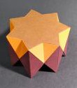

This page and the models are generated by a Python program [MTUN1]. They are displayed with help of a JavaScript bundle [MTUN2].
Note: for optimal experience Javascript should be enabled.
During June 2025 Don Romano posted some riddles by email regarding semicupolae ([MIRA1]) and duals and Ulrich Mikloweit ([MIKL1]) generated some model using Stella ([WEBB1]). This motivated me to investigate some new series of polyhedra.[WIKIO1].
In an email in June 2025 my friend Don posted a riddle. He sent two pictures of polyhedra he had built and asked to name the class of polyhedra they belonging to and to name the duals of these. Ulrich was able to recreate the topological equivalent polyhedron of one of them, but the second turned out a bit different. The images that Don had posted were images of keratinoids and the duals he was asking for were the 5/2 semicupola and the 5/4 semicupola, or alternatively follow this link. For the latter Ulrich's results looked a bit different and therefore Don asked him to check what its dual looks like according to Stella.
Ulrich sent the results and replied with the following remark: ".. BUT if you make the dual the base model you get a completely different shape as dual than the starting one." In other words if you take the dual of the dual of the 5/4 semicupola, you end up with something else (in Stella). The model he got was this one .
Ulrich also generated and Don used that as inspiration to build a model of a reshaped version of that one. He fit the whole thing in a heptagonal cylinder while using equilateral triangles, as shown on the left. This is a 3D model of the . Don suggested to name these n/m pseudo-cupolaic prismatoids (PCP from now on). This motivated me to dive a bit deeper into this subject, while Don provided valuable feed-back and advise.
I started writing a script that would generate an OFF file for , which is similar to the Don's 7/2. Then I generalized the script to generate the n/2 PCPs for any value of n > 4. In a next step I generalized the script to allow for other even values of m, e.g. this .
I noticed that for some cases it wasn't possible to get equilateral triangles and instead I adjusted the height to turn the crossed rectangles into crossed squares. With crossed squares is meant crossed rectangles that fit into a square. As a consequence the triangles became isosceles, see e.g. . The next step was to extend the idea to odd m, for which it isn't possible to use triangles. Instead I decided to use trapezoids. A consequence to using trapezoids instead of triangles is that the extra edges lead to an {n/m'} polygon parallel to the original {n/m} polygon, see e.g.
So far the script didn't allow digons to be used, as happens e.g. in the case of {8/4}. Since digons will just degenerate into edges they wouldn't actually be a problem and hence the script was adjusted to allow those as well, see e.g. . Finally I allowed the script to generate the PCP for n=3, see e.g. , and n=4, e.g. .
Finally I decided to summarise our findings here with the help of Don Romano, who wrote most of the text for the general definition. Thanks, Don!
An n/m pseudo-cupolaic prismatoid (PCP) is a polyhedron that can be inscribed in a right prism such that its base polygons (including star polygons henceforth) lie in the base planes of the circumscribing prism along with a set (or 'belt') of 2n joining polygons of two distinct kinds (n of each) that serve to join the two bases together. The n/m notation used here is consistent with the {n/m} notation used for designating star polygons. In two dimensions an {n/m} polygon is the same as an {n/(n-m)} polygon. For consistency reasons the cases for which m > n / 2 are used to indicate that retrograde faces occur from the {n/m} base.
A PCP has two parallel and opposing bases. These bases can be of three distinct types:
Of the pairings that can be made with the above three base types, only four combinations occur in a PCP:
When two polygon bases are present they will both be n-gons having the same n, but possibly different m's.
An n/m PCP has a set of two types (possibly the same) of n polygons that join the bases. Half of these joining polygons are of a type only from the following:
This set of n polygons shares some of its edges with one or both of the PCP's bases. Additionally, the set of joining polygons always includes a set of n crossed-rectangles. The height of a PCP can be scaled so that these crossed rectangles become crossed squares. These crossed-rectangles are only vertex-coincident with the two bases. The two types of polygons form one or more surrounding 'belts' in which these types appear in an alternating way.
For an n/m PCP we can recognise the following patterns:
For odd m the PCP consists of an {n/m} polygon, an {n/p} polygon, where p = (n-2) mod n, and a 'belt' of n crossed squares and n isosceles trapezoids (trapezia). Examples are
For even m the PCP consists of an {n/m} polygon, n crossed squares and n isosceles triangles. Note that an isosceles triangle is obtained from an isosceles trapezoid if the length of one of the parallel sides gets 0. For example
For odd m, sometimes the same PCP occurs for two different values of m because the {n/m} polygon and the {p/m} polygon are exchanged. This is e.g. the case for
For m = 1 the PCP is a n-sided prism for which the squares are replaced by a pair of crossed squares. Note that in this case the isosceles trapezoids are self-intersecting and they become crossed squares. Examples are
Some of the PCP have membranes, for example
For some even m the isosceles triangles can be transformed into equilateral triangles by scaling the height of the PCP. In this case the crossed squares become crossed rectangles. Compare for instance
If n is even and m = n / 2, then the PCP will have a digonal base consisting of n/m digons. These digons will just degenerate into edges. Some examples are
Some of the PCP are compounds, e.g.
For some PCP the 'belt' contains rectangles instead trapezoids. This happens for odd m where the bases {n/m} and {n/m'} are the same polygon. Since both bases are the same these are semi-uniform, and since these rectangles also meet the at the centre these are hemi-polyhedra as well. More general this happens for n = 4k with k a natural number and m = (n/2) + 1, e.g.
More needs to be said about compounds, for instance when they occur. It seems they don't occur in a natural way for odd m. With 'natural way' is meant using the observation of odd m, where the PCP consists of base polygons {n/m} and {n/p}, with p = (m -2) mod n. However if you put together two 5/3, then you might want to include this into the set of PCP since they do fulfill the requirements as they are written now. If not then the definition needs to be updated to exclude compounds. Similarly a compound of two 3/1 might be considered being a PCP.
If you replace all squares in a pentagrammic prism by a pair of crossed squares, then you will get a polyhedron that fits the PCP definition. This PCP consists of two {5/2} polygon bases, but there is a 5/2 already. This means there is a need for a new notation that includes both base polygons. The fact that 8/3 and 8/7 are the same is another indication that the notation should be updated. Yet another reason is that a 7/5 includes a {7/4} polygon, and one might wonder why it is called 7/5 and not 7/4. A new notation might as well include the extra compounds mentioned above in a unique way.
There is an observation that states that for odd m the PCP consists of base polygons {n/m} and {n/p}, with p = (m -2) mod n, but I think this could be adjusted to p = (m - 2k) mod n, for k a natural number. Yet another reason to update the PCP notation, since just using n/m doesn't lead to one unique PCP anymore.
Make a comment about double digon bases, that these aren't considered here, though Grünbaum might have seen this a valid polyhedra if..
2025-08-08, 09:41 CET